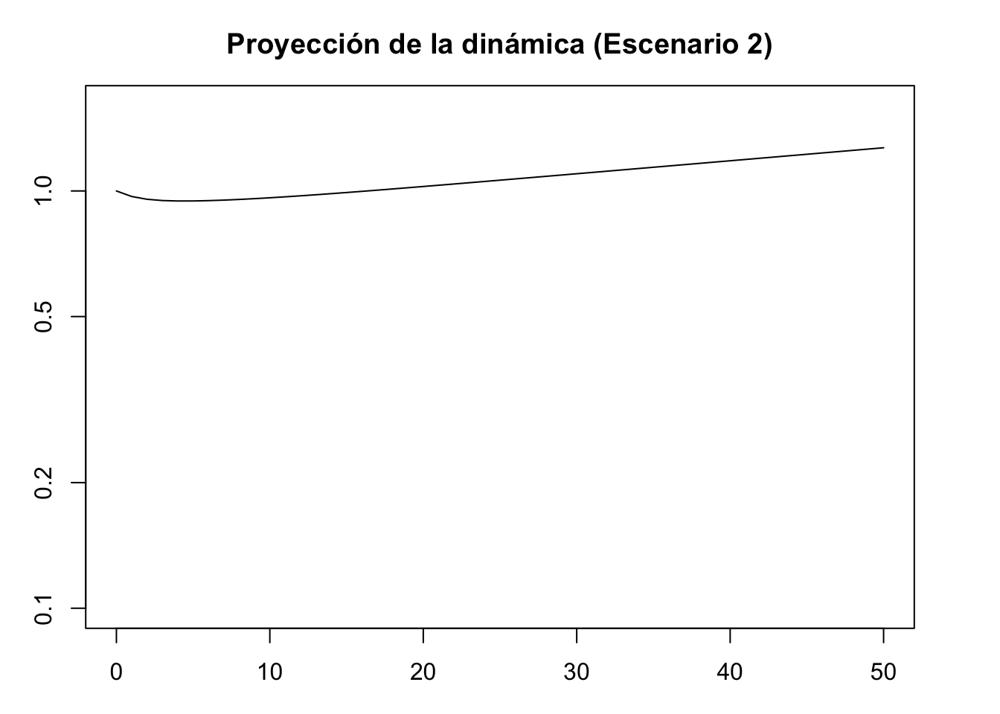
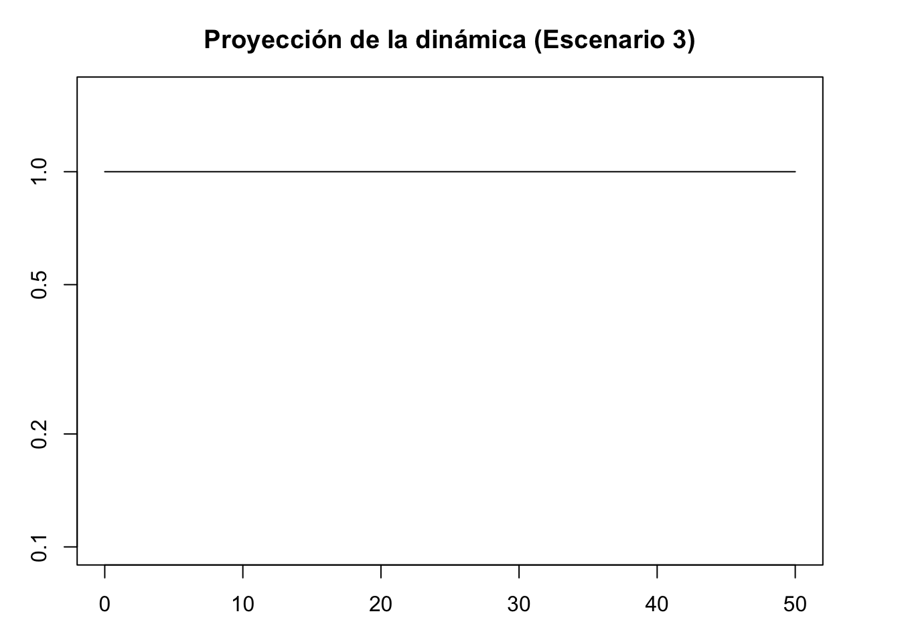
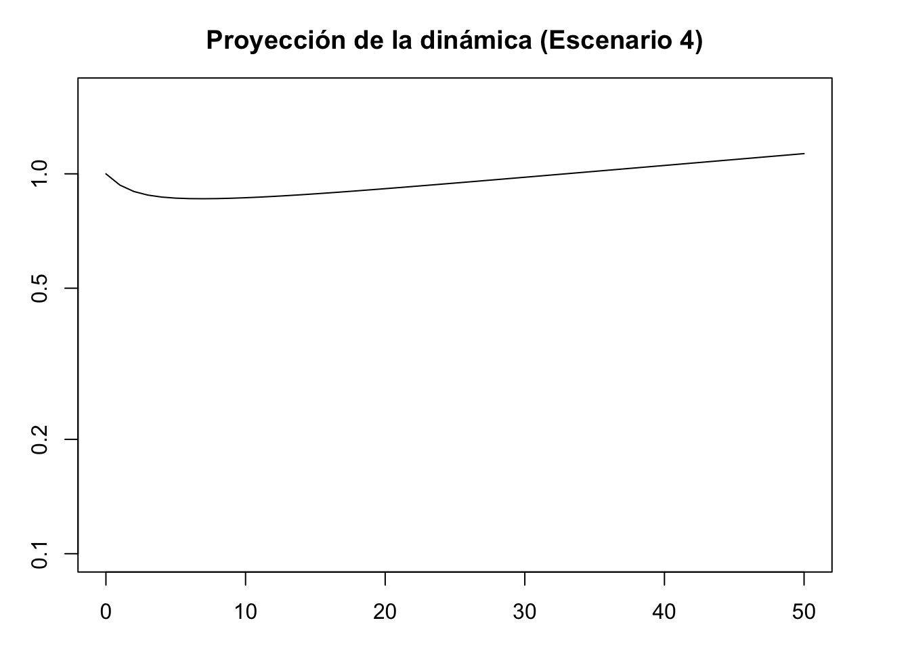
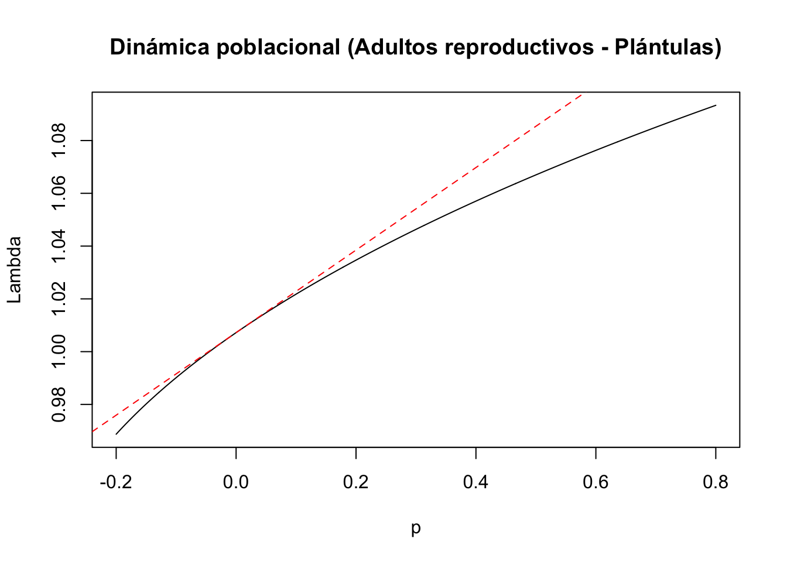
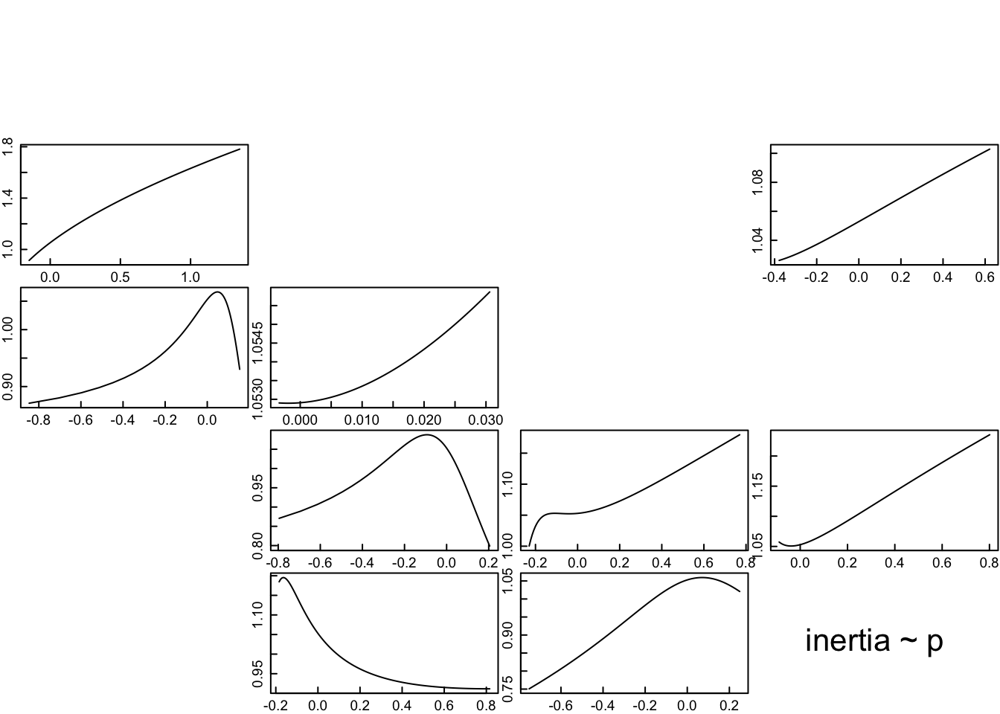
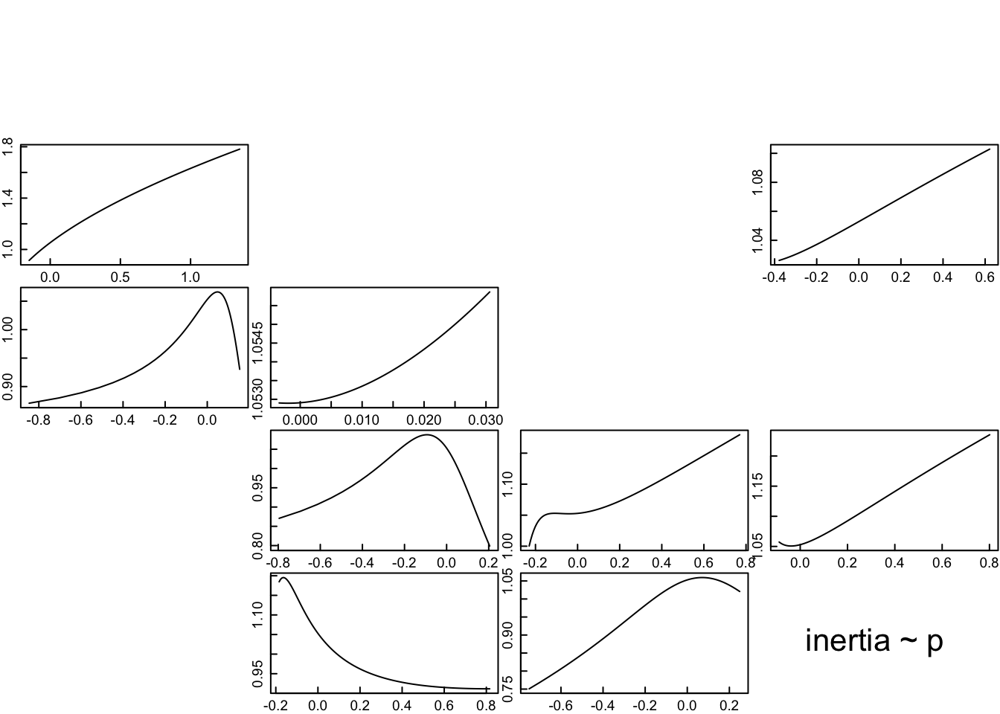

Chapter 11 Dinámica transitoria (transient dynamics)
Autores: “Mariana Hernández Apolinar y Paola Portillo Tzompa”
11.1 Dinámica poblacional de largo y corto plazo
Los modelos de proyección poblacional (MPP), previamente vistos en la Sección XX, son de carácter determinístico; es decir, éstos suponen que las muertes, la reproducción y el crecimiento individual (i.e. tasas vitales) en las distintas categorías de la población no varían en el tiempo; por lo tanto, al mantenerse constantes la población crece a una velocidad constante y la proporción de individuos por categoría de tamaño/estado no cambia en el largo plazo (Bierzichudek, 1999; Caswell, 2001). Sin embargo, en la naturaleza estas variables distan de ser constantes, debido a que las poblaciones experimentan recursos limitados, ambientes heterogéneos y cambiantes que perturban las poblaciones, afectando su dinámica y sugiriendo que la tasa de crecimiento de largo plazo no es un buen predictor de los cambios que enfrentan dichas las poblaciones (Bierzichudek, 1999). De ahí que, se hayan desarrollado modelos que integran dicha variación y que permiten hacer proyecciones más realistas sobre la dinámica poblacional de la especie de estudio, tal es el caso de los modelos de de crecimiento estocástico y los análisis de dinámica transitoria.
En particular, los análisis de la dinámica transitoria surgen como una alternativa para analizar cómo cambia la dinámica de una población en el tiempo al presentarse un evento de perturbación. En este análisis se evalúa la respuesta de la población en el corto plazo; es decir, antes de alcanzar la estructura estable de estadios/edades y de crecer a una tasa constante. Dicha respuesta se determina a través de las discrepancias o diferencias que hay entre la estructura actual (i.e. corto plazo) y la estructura estable (i.e. largo plazo) de la población analizada (Raventós et al. 2015).
Debido a que el análisis de la dinámica transitoria es complejo, para facilitar y asimilar su desarrollo, a continuación se listan la serie de pasos que se deben seguir. El análisis se lleva a cabo en el Programa de estadística R y la serie de pasos fue definida por Stoot y colaboradores en 2010 y 2012.
Paso 1. Matriz de transición y estructura poblacional inicial. En primer lugar se debe contar con una matriz de proyección poblacional y su correspondiente vector de la estructura poblacional observada al inicio del estudio. En en este caso se usarán los datos obtenidos para Lepanthes rubripetala por Tremblay y colaboradores (2015).
## PROYECTO DE DINAMICA TRANSITORIA O DE CORTO PLAZO
##### PART I: DINÁMICA POBLACIONAL DE LARGO PLAZO
###Este es un análisis de dinámica transitoria para
#Lephanthes rubripetala (Población 1) con cuatro clases de tamaño: de estado en
#su ciclo de vida: 1. plántula, 2.juvenil, 3. adultos no reproductivos,
#4. adultos reproductivos.
##PASO 1. MATRIZ DE PROYECCIÓN POBLACIONAL Y ESTRUCTURA POBLACIONAL INICIAL (t0)
#Librerias de R requeridas para el análisis
library(popdemo)## Welcome to popdemo! This is version 1.3-0
## Use ?popdemo for an intro, or browseVignettes('popdemo') for vignettes
## Citation for popdemo is here: doi.org/10.1111/j.2041-210X.2012.00222.x
## Development and legacy versions are here: github.com/iainmstott/popdemolibrary(popbio)
#Capturar los datos de la matriz para L. rubripetala (Tremblay et al. 2015)
Lr <- matrix(c(0.4324,0,0,0.15,
0.3784,0.8459,0,0,
0,0.0034,0.7954,0.2300,
0,0.0890,0.1841,0.7510), byrow=TRUE,ncol=4)
#Capturar las categorias de estado
categoria <- c("1","2","3","4")
#Obtener la matriz L. rubripetala
Lr1 <- matrix(Lr[1:4, ], nrow = 4, dimnames = list(categoria, categoria))
Lr1## 1 2 3 4
## 1 0.4324 0.0000 0.0000 0.150
## 2 0.3784 0.8459 0.0000 0.000
## 3 0.0000 0.0034 0.7954 0.230
## 4 0.0000 0.0890 0.1841 0.751#Capturar y obtener el vector inicial (datos de campo) de clases de estado población 1 (Schödelbauerová et al. 2010)
n0 <- c(0, 46, 38, 82)
n0## [1] 0 46 38 82Paso 2: Condiciones que debe cumplir la matriz de estudio. Previo al análisis de dinámica transitoria se debe comprobar que la matriz de transición poblacional sea:
a) Irreducible, que los elementos de la matriz de análisis y, por lo tanto, los nodos de la gráfica del ciclo de vida, estén fuertemente conectados, tengan una ruta, de modo que formen un ciclo.
b) Ergódica, que la dinámica asintótica sea independiente de las condiciones iniciales (i.e. estructura poblacional inicial)
c) Primitiva, que al elevar a altas potencias una matriz irreducible positiva (i.e. sin elementos negativos) su resultado sea único y tenga un sólo valor positivo (i.e. tasa de crecimiento poblacional).
(Caswell, 2001)
Así que, a continuación se comprueba si la matriz de L. rubripetala cumple con estas condiciones o supuestos.
##PASO 2: PASO 2: CONDICIONES QUE DEBE CUMPLIR LA MATRIZ DE ESTUDIO.
#a) Ergodicidad
ergo <- isErgodic(Lr1, digits = 5, return.eigvec = FALSE)
ergo## [1] TRUE## [1] TRUE## [1] TRUEPaso 3: Análisis demográfico básico. En el análisis de dinámica transitoria necesitamos conocer cómo se comporta una población en el largo plazo, por lo que se proyecta el crecimiento poblacional de tipo asintótico para la matriz de la población seleccionada. Entonces, a partir de la matriz de proyección poblacional y el correspondiente vector de la estructura poblacional observada al inicio del estudio de L. rubripetala, calcularemos la tasa de crecimiento poblacional (i.e.lambda, de ahora en adelante lambda-max), la estructura poblacional estable (w, de ahora en adelante w-max) y el valor reproductivo (v), así como las matrices de sensibilidad y elasticidad. Con este fin, usaremos el procedimiento de la Sección X, desarrollado en el Programa “popbio” de R.
Además de esta información, se estimarán dos nuevos términos: el tiempo de convergencia (convergence-time) y la relación de amortiguamiento (damping-ratio). El primero indica el tiempo esperado en que una población alcanza la estructura estable, mientras que el segundo es una medida de que tan rápido converge una población a la estructura estable (Caswell, 2001).
##*PASO 3: ANÁLISIS DEMOGRÁFICO BÁSICO: PROYECCIÓN DE LA POBLACIÓN*.
#Análisis asintótico (i.e. largo plazo) del crecimiento poblacional de L. rubripetala
#La orquídea florece todo el año, por lo que el seguimiento de la población fue mensual.
#PARÁMETROS POBLACIONALES
##lambda: Tasa de crecimiento poblacional
lambda <-lambda(Lr1)
lambda## [1] 1.007206## 1 2 3 4
## 0.08789851 0.20619682 0.36907404 0.33683063## 1 2 3 4
## 1 0.018 0.000 0.000 0.023
## 2 0.023 0.122 0.000 0.000
## 3 0.000 0.001 0.313 0.083
## 4 0.000 0.023 0.083 0.311## $dr
## [1] 1.210702
##
## $t
## [1] 12.04278# Tiempo de convergencia
n = c(1000, 0, 0, 0)
tconvergencia <- convt(Lr1, accuracy = 1e-3, vector = n)
tconvergencia## [1] 2511.2 Dinámica transitoria
En la dinámica transitoria o de corto plazo, Stoot y colaboradores (2010, 2012) incorporaron la estocasticidad demográfica para analizar el cambio de la estructura poblacional debido a una perturbación de origen biótico, abiótico o antropogénico (i.e. cambios en la estructura incicial observada). Este tipo de estocasticidad se refiere a la sobrevivencia y reproducción en número entero y finito; es decir, un individuo sobrevive o no, lo cual se representa con 1 ó 0, al igual que puede reproducirse (1) o no (0). La incorporación de esta característica en los individuos genera una variación no cíclica ni predecible en la respuesta de los individuos de una población.
En el análisis transitorio, el modelo sesgado por etapas (i.e. categorías) es el procedimiento que se usa para evaluar la perturbación de la estructura inicial. La perturbación o sesgo en la estructura inicial se evalúa modificando la proporción de individuos presentes en alguna categoría de la estructura poblacional. Cabe señalar que estas modificaciones representan distintos escenarios o simulaciones que ocurren o pueden ocurrir en nuestra población de estudio.
Por ejemplo, la estructura inicial en la población 1 de Lepanthes rubripetala fue la siguiente: (0,46,38,82). En este caso, al modificar la proporción de individuos presente en una, dos o en todas las categorías de la población se simuló el cambio en la dinámica en el corto plazo; es decir, en un momento previo a que se alcance el crecimiento estable o de largo plazo. En Lepanthes rubripetala se hicieron cinco simulaciones o escenarios al suponer las siguientes proporciones de individuos por categoría (Tremblay et al, 2015):
- Límite inferior: (1,0,0,0), los individuos de la población se contran en la categoría de plántulas (Lower bound).
- Inicio I: (0.15, 0.35, 0,30, 0.20), mayor proporción de individuos en las categorías juvenil y adulto no reproductivo.
- Estructura estable de la población: los individuos de la población tienen una abundancia de acuerdo con w-max.
- Inicio II: (0.4, 0.2,0.2, 0.2), mayor proporción de plántulas y una proporción similar en las categorías juvenil, adulto no reproductivo y adulto reproductivo.
- Límite superior: (0,0,0,1), los individuos de la población se contran en la categoría de adulto reproductivo.
Dinámica poblacional absoluta. Como consecuencia de las perturbaciones o escenarios existen cambios en el crecimiento poblacional, los cuales son evidentes si se grafican. Un aspecto a considerar es que, la gráfica que se genera incluye la influencia de la dinámica trasitoria y asintótica, por lo que se le denomina dinámica poblacional absoluta (Fig. 2A de Tremblay y colaboradores, 2015).
##PASO 4. DINÁMICA POBLACIONAL ABSOLUTA.
#Se proyecta el crecimiento poblacional ante cambios en la estructura
#inicial debidos a la perturbación (5 escenarios). Esta gráfica incluye la
#influencia de la dinámica trasitoria y asintótica, por lo que se le denomina
#dinámica poblacional absoluta. Proyección a 50 meses.
#Definir los margenes
par(mfrow = c(1, 1))
par(mar = c(3, 3, 3, 3))
#Librerias de R requeridas para el análisis
library(popdemo)
library(popbio)
library(ggplot2)
library(dplyr)
library(scales)##
## Attaching package: 'scales'## The following object is masked from 'package:purrr':
##
## discard## The following object is masked from 'package:readr':
##
## col_factor#Vector original
nLr0 <- c(0, 46, 38, 82)
#Escenario 1. Límite inferior
nLr1 <- c(166, 0, 0, 0)
#Proporción de individuos por categoría
nLr1 <- nLr1/sum(nLr1)
nLr1## [1] 1 0 0 0#Gráfica de barras del escenario 1
barplot(nLr1, names.arg = 1:4)
title(main = "Escenario 1", xlab = "Categoría", ylab = "Proporción")#Proyección de la dinámica escenario 1
pr1 <- project(Lr1, vector = nLr1, time = 50)
plot(pr1, log = "y", ylim = c(0.1, 1.6), ann = FALSE)
title(main = "Proyección de la dinámica (Escenario 1)", xlab = "Time intervals", ylab = "Population size/density")
#Escenario 2. Inicio I
nLr2 <- c(25, 58, 50, 33)
#Proporción de individuos por categoría
nLr2 <- nLr2/sum(nLr2)
nLr2## [1] 0.1506024 0.3493976 0.3012048 0.1987952#Gráfica de barras del escenario 1
barplot(nLr2, names.arg = 1:4)
title( main = "Escenario 2", xlab = "Categoría", ylab = "Proporción")
#Proyección de la dinámica escenario 2
pr2 <- project(Lr1, vector = nLr2, time = 50)
plot(pr2, log = "y", ylim = c(0.1, 1.6), ann = FALSE)
title(main = "Proyección de la dinámica (Escenario 2)", xlab = "Time intervals", ylab = "Population size/density")
#Escenario 3. Estructura estable
nLr3 <- Wmax
#Gráfica de barras del escenario 3
barplot(nLr3, names.arg = 1:4)
title( main = "Escenario 3", xlab = "Categoría", ylab = "Proporción")
## 1 2 3 4
## 1 0.4293064 0.000000000 0.0000000 0.1489268
## 2 0.3756927 0.839848010 0.0000000 0.0000000
## 3 0.0000000 0.003375675 0.7897093 0.2283545
## 4 0.0000000 0.088363250 0.1827829 0.7456270## eigen() decomposition
## $values
## [1] 1.0000000+0.0000000i 0.8259670+0.0000000i 0.4892619+0.0642191i
## [4] 0.4892619-0.0642191i
##
## $vectors
## [,1] [,2] [,3] [,4]
## [1,] -0.1605030+0i -0.03255031+0i -0.6050037+0.1108223i -0.6050037-0.1108223i
## [2,] -0.3765163+0i 0.88098064+0i 0.6483299+0.0000000i 0.6483299+0.0000000i
## [3,] -0.6739307+0i -0.46400142+0i 0.1712014+0.2009688i 0.1712014-0.2009688i
## [4,] -0.6150542+0i -0.08669643+0i -0.2913524-0.2162698i -0.2913524+0.2162698ipr3 <- project(Lr1st, vector = Wmax, time = 50)
plot(pr3, log = "y", ylim = c(0.1, 1.6), ann = FALSE)
title(main = "Proyección de la dinámica (Escenario 3)", xlab = "Time intervals", ylab = "Population size/density")
#Escenario 4. Inicio II
nLr4 <- c(66, 33, 33, 33)
#Proporción de individuos por categoría
nLr4 <- nLr4/sum(nLr4)
nLr4## [1] 0.4 0.2 0.2 0.2#Gráfica de barras del escenario 4
barplot(nLr4, names.arg = 1:4)
title( main = "Escenario 4", xlab = "Categoría", ylab = "Proporción")
#Proyección de la dinámica escenario 4
pr4 <- project(Lr1, vector = nLr4, time = 50)
plot(pr4, log = "y", ylim = c(0.1, 1.6), ann = FALSE)
title(main = "Proyección de la dinámica (Escenario 4)", xlab = "Time intervals", ylab = "Population size/density")
#Escenario 5. Límite superior
nLr5 <- c(0, 0, 0, 166)
#Proporción de individuos por categoría
nLr5 <- nLr5/sum(nLr5)
nLr5## [1] 0 0 0 1#Gráfica de barras del escenario 5
barplot(nLr5, names.arg = 1:4)
title( main = "Escenario 5", xlab = "Categoría", ylab = "Proporción")
#Proyección de la dinámica escenario 5
pr5 <- project(Lr1, vector = nLr5, time = 50)
plot(pr5, log = "y", ylim = c(0.1, 1.6), ann = FALSE)
title(main = "Proyección de la dinámica (Escenario 5)", xlab = "Time intervals", ylab = "Population size/density")#Gráfica de la dinámica absoluta
Population_density <- stack(c(as.data.frame(pr1), as.data.frame(pr2), as.data.frame(pr3), as.data.frame(pr4), as.data.frame(pr5)))
Population_density[, "time"] <- rep(seq(1, nrow(pr1), 1), 5)
names(Population_density) <- c("Values", "Projection", "Time")
#Population_density[, "Projection"] <- c(rep("Projection 1", len), rep("Projection 2", len), rep("Projection 3", len), rep("Projection 4", len), rep("Projection 5", len))
abs.plot <- ggplot(data = Population_density) +
theme_classic() +
theme(panel.border = element_blank()) +
theme(legend.position = "none") +
geom_line(aes(x = Time, y = Values, group = Projection, colour = Projection), linewidth = 0.8) +
geom_hline(yintercept = 1, linewidth = 0.8) +
scale_colour_manual(values = c("#C6E2FF", "#B9D3EE", "black", "#9FB6CD", "#6C7B8B")) +
theme(axis.title.x = element_text(vjust = -1, size = 12)) +
theme(axis.title.y = element_text(vjust = 1, size = 12)) +
theme(axis.text = element_text(size = 12)) +
labs(title = "Absolut population dynamics", x = "Projection intervals", y = "Population density relative to lambda max")+
theme(plot.title = element_text(hjust = 0.5, face = "bold", size = 12))
abs.plot  ##Dinámica transitoria estandarizada: límites
##Dinámica transitoria estandarizada: límites
Con el fin de evaluar en el corto plazo los cambios cuantitativos en la población en respuesta a una perturbación determinada se calculan los límites de la dinámica transitoria a través Índices de transferencia y se proyecta el crecimiento de la población en el corto plazo.
#Dinámica transitoria específica de la población.
a proyección se hace sin la influencia de la dinámica asintótica. hecho que facilita y hace equitativa la comparación entre los modelos de los distintos escenarios. Se elimina el efecto de la dinámica asintótica al estandarizar la matriz y el vector de la estructura. En el primer caso se usa el comando ‘standard.A=T’, lo cual supone que en el largo plazo la tasa de crecimiento poblacional tendrá un valor de 1 (unidad) -por lo que la población no crecerá ni declinará, en el segundo caso se usa el comando ‘standard.vec=T’, que implica que éste suma 1 (Stoot et al., 2010, 2012).
DINÁMICA POBLACIONAL TRANSITORIA ESTANDARIZADA
Índices de transferencia. Con el fin de evaluar en el corto plazo qué cambios cuantitativos habría en la población como respuesta ante una perturbación determinada, se calculan los límites de la dinámica transitoria a través de los Índices de transferencia, que incluyen los siguiente tres parámetros (Stoot et al. 2012):
Reactividad alta y Reactividad baja (Upper reactivity y Lower reactivity) que representan el crecimiento o el decremento inmediato (i.e. primer intervalo de tiempo) de la población antes de alcanzar la tasa constante de crecimiento poblacional.
Máxima amplificación/Máxima atenuación (Maximum amplification/Maximum attenuation) que indican,respectivamente, el incremento o decremento máximo futuro del crecimiento poblacional previo a alcanzar la tasa constante de crecimiento poblacional.
Inercia alta e Inercia baja (Upper inertia y Lower inertia) que evalúan el límite más alto o el más bajo en el crecimiento de la población antes de alcanzar la tasa constante de crecimiento poblacional, respectivamente.
### PARTE II: DINÁMICA POBLACIONAL TRANSITORIA ESTANDARIZADA.
#Modelo de Dinámica transitoria específica de la población
## La dinámica de corto plazo se projecta a partir de la matriz de transición y el vector inicial previamente definidos
#Definir los margenes
library(popdemo)
library(ggplot2)
#Vector de estructura inicial: abundancia por categoría de acuerdo con el estado
n0 <- c(0, 46, 38, 82)
## 1) PROYECCIÓN DE LA DINÁMICA DE CORTO PLAZO. Con la función PROJECT se proyectar la a 50 meses, tomando en
#cuenta la matriz de transición poblacional y el vector de la estructura.
#En esta función se elimina el efecto de la dinámica asintótica al estandarizar:
#a) la matriz usando el comando 'standard.A=T', lo cual significa que
#en el largo plazo la tasa de crecimiento poblacional tendrá
#un valor de 1 (unidad), por lo que la población no crecerá ni declinará.
#b) el vector de la estructura usando 'standard.vec=T', lo cual supone que éste suma 1,
# Ambas estandarizaciones facilitan y hacen equitativa la comparación entre modelos
#con distintos tamaños poblacionales y distintas tasas de crecimiento de largo plazo.
#Gráfica de la dinámica de corto plazo por escenario. En la graficación se usa la misma matriz pero se cambia el vector de acuerdo con el escenario
#Escenario 1: Límite inferior
pr2.1 <- project(Lr1, vector = nLr1, time = 50,
standard.A = T, standard.vec = T)
#Plot the amplification projection and label it
# Se atenua (decrece)
plot(pr2.1, log = "y", main = "Dinámica a corto plazo (Escenario 1)", cex.axis = 0.8)
#Escenario 2. Inicio I
pr2.2 <- project(Lr1, vector = nLr2, time = 50,
standard.A = T, standard.vec = T)
#Plot the amplification projection and label it
plot(pr2.2, log = "y", main = "Dinámica a corto plazo (Escenario 2)", cex.axis = 0.8) # Se atenua (decrece)#Escenario 3. Estructura estable
pr2.3 <- project(Lr1, vector = nLr3, time = 50,
standard.A = T, standard.vec = T)
#Plot the amplification projection and label it
plot(pr2.3, main = "Dinámica a corto plazo (Escenario 3)", cex.axis = 0.8)# Se amplifica (crece)
#Escenario 4. Inicio II
pr2.4 <- project(Lr1, vector = nLr4, time = 50,
standard.A = T, standard.vec = T)
#Plot the amplification projection and label it
plot(pr2.4, log = "y", main = "Dinámica a corto plazo (Escenario 4)", cex.axis = 0.8)# Se atenua (decrece)
#Escenario 5. Límite superior
pr2.5 <- project(Lr1, vector = nLr5, time = 50,
standard.A = T, standard.vec = T)
#Plot the amplification projection and label it
plot(pr2.5, log = "y", main = "Dinámica a corto plazo (Escenario 5)", cex.axis = 0.8)# Se amplifica (crece)
#2) LIMITES TRANSITORIOS POR ESCENARIO.
#Escenario 1: Límite inferior
#Cálculo de los limites transitorios
library(popdemo)
lim.trans <- as.data.frame(matrix(NA, 5, 3))
names(lim.trans) <- c("reac", "maxatt", "inertia")
reac1<-reac(Lr1, vector = nLr1)
lim.trans[1, 1] <- reac1
reac1## [1] 0.8049991## $maxatt
## [1] 0.4643848
##
## $t
## [1] 49## [1] 0.4643642## [1] 0.9628771## $maxatt
## [1] 0.8863718
##
## $t
## [1] 39## [1] 0.8863327lim.trans[2, 3] <- inertia2
#Escenario 3. Estructura estable
reac3<-reac(Lr1, vector = nLr3)
lim.trans[3, 1] <- reac1
reac3## [1] 1## $maxamp
## [1] 1
##
## $t
## [1] 1## [1] 1lim.trans[3, 3] <- inertia3
#Escenario 4. Inicio II
reac4<-reac(Lr1, vector = nLr4)
lim.trans[4, 1] <- reac1
reac4## [1] 0.9273971## $maxatt
## [1] 0.7894384
##
## $t
## [1] 42## [1] 0.7894036lim.trans[4, 3] <- inertia4
#Escenario 5. Límite superior
reac5<-reac(Lr1, vector = nLr5)
lim.trans[5, 1] <- reac5
reac5## [1] 1.122908## $maxamp
## [1] 1.23733
##
## $t
## [1] 34## [1] 1lim.trans[5, 3] <- inertia5
# Dinamica transitoria plot
len <- nrow(pr2.1)
Population_density <- stack(c(as.data.frame(pr2.1), as.data.frame(pr2.2), as.data.frame(pr2.3), as.data.frame(pr2.4), as.data.frame(pr2.5)))
Population_density[, "time"] <- rep(seq(1, len, 1), 5)
names(Population_density) <- c("Values", "Projection", "Time")
Population_density[, "Projection"] <- c(rep("Projection 1", len), rep("Projection 2", len), rep("Projection 3", len), rep("Projection 4", len), rep("Projection 5", len))
trans.plot <- ggplot(data = Population_density) +
theme_classic() +
theme(panel.border = element_blank()) +
theme(legend.position = "none") +
geom_line(aes(x = Time, y = Values, group = Projection, colour = Projection), linewidth = 0.8) +
scale_colour_manual(values = c("#C6E2FF", "#B9D3EE", "black", "#9FB6CD", "#6C7B8B")) +
theme(axis.title.x = element_text(vjust = -1, size = 12)) +
theme(axis.title.y = element_text(vjust = 1, size = 12)) +
theme(axis.text = element_text(size = 15)) +
labs(title = "Transient population dynamics" ,x = "Projection intervals", y = "Population density relative to lambda max") +
theme(plot.title = element_text(hjust = 0.5, face = "bold", size = 12)) +
ylim(0.2, 1.5)
trans.plot +
geom_text(x = 45, y = 1.09, label = expression(paste(bar(rho) == 0.46)), hjust = 1.0, vjust = -1) +
geom_text(x = 45, y = 0.74, label = expression(paste(bar(rho) == 0.89)), hjust = 1.0, vjust = -1) +
geom_text(x = 45, y = 0.64, label = expression(paste(bar(rho) == 0.70)), hjust = 1.0, vjust = -1) +
geom_text(x = 45, y = 0.33, label = expression(paste(bar(rho) == 1)), hjust = 1.0, vjust = -1)## Warning in is.na(x): is.na() applied to non-(list or vector) of type
## 'expression'
## Warning in is.na(x): is.na() applied to non-(list or vector) of type
## 'expression'
## Warning in is.na(x): is.na() applied to non-(list or vector) of type
## 'expression'
## Warning in is.na(x): is.na() applied to non-(list or vector) of type
## 'expression'
##Funciones de transferencia Finalmente, el cálculo de las funciones de transferencia representa el último paso en análisis de dinámica transitoria establecido por Stott y colaboradores (2012). A través de estas ecuaciones se evalúa la elasticidad o efecto de la perturbación sobre la dinámica poblacional. A diferencia de las matrices de elasticidad de los modelos de proyección poblacional, estas elasticidades no son lineales y evidencian la importancia relativa de la de la perturbación en la categoría de tamaño/estado sobre el crecimiento de la población en el corto plazo. Estas ecuaciones también están disponibles en el programa Popdemo de R y sus resultados se representan a través de gráficas.
La perturbación de la estructura está determinada ppor dos vectores d y e
##PASO 6: ANALISIS DE LAS FUNCIONES DE TRANSFERENCIA
#Establecer márgenes:
#Vector original
library(popdemo)
nLr0 <- c(0, 46, 38, 82)
#PERTURBACIÓN DEL VECTOR ORIGINAL
#1) Entrada de la matriz a(1,1): plántulas a plántulas
tf1 <- tfa_lambda(Lr1, d = c(1, 0, 0, 0),
e = c(1, 0, 0, 0),
prange = seq(0, 4, 0.01))
#Gráfica de la dinámica poblacional
plot(tf1, ann = FALSE)
title(main = "Dinámica poblacional (Plántulas - Plántulas)", ylab = "Lambda", xlab = "p")
#Cálculo de lambda-max:
lambda1 <- Re(eigen(Lr1)$values[1])
#Cálculo de la sensibilidad
sens1 <- tfs_lambda(Lr1, d = c(1, 0, 0, 0), e = c(1, 0, 0, 0))
#Agregar la línea, especificando el intercepto y la pendiente
abline(lambda1, sens1, lty = 2, col = "red")
#2) Entrada de la matriz a(2,1): plántulas y juveniles
tf2 <- tfa_lambda(Lr1, d = c(0, 1, 0, 0),
e = c(1, 0, 0, 0),
prange = seq(-0.4, 0.6, 0.01))
#Gráfica de la dinámica poblacional
plot(tf2, ann = FALSE)
title(main = "Dinámica poblacional (Plántulas - Juveniles)", ylab = "Lambda", xlab = "p")
#Cálculo de lambda-max:
lambda2 <- Re(eigen(Lr1)$values[1])
#Cálculo de la sensibilidad
sens2 <- tfs_lambda(Lr1, d = c(0, 1, 0, 0), e = c(1, 0, 0, 0))
#Agregar la línea, especificando el intercepto y la pendiente
abline(lambda2, sens2, lty = 2, col = "red")
#3) Entrada de la matriz a(2,2): juveniles y juveniles
tf3 <- tfa_lambda(Lr1, d = c(0, 1, 0, 0),
e = c(0, 1, 0, 0),
prange = seq(-0.8, 0.1, 0.001))
#Gráfica de la dinámica poblacional
plot(tf3, ann = FALSE)
title(main = "Dinámica poblacional (Juveniles - Juveniles)", ylab = "Lambda", xlab = "p")
#Cálculo de lambda-max:
lambda3 <- Re(eigen(Lr1)$values[1])
#Cálculo de la sensibilidad
sens3 <- tfs_lambda(Lr1, d = c(0, 1, 0, 0), e = c(0, 1, 0, 0))
#Agregar la línea, especificando el intercepto y la pendiente
abline(lambda3, sens3, lty = 2, col = "red")
#4) Entrada de la matriz a(3,2): juveniles y no reproductivos
tf4 <- tfa_lambda(Lr1, d = c(0, 0, 1, 0),
e = c(0, 1, 0, 0),
prange = seq(-0.001, 0.03, 0.01))
#Gráfica de la dinámica poblacional
plot(tf4, ann = FALSE)
title(main = "Dinámica poblacional (Juveniles - No reproductivos)", ylab = "Lambda", xlab = "p")
#Cálculo de lambda-max:
lambda4 <- Re(eigen(Lr1)$values[1])
#Cálculo de la sensibilidad
sens4 <- tfs_lambda(Lr1, d = c(0,0,1,0), e = c(0, 1, 0, 0))
#Agregar la línea, especificando el intercepto y la pendiente
abline(lambda4, sens4, lty = 2, col = "red")
#5) Entrada de la matriz a(4,2): juveniles a adultos
tf5 <- tfa_lambda(Lr1, d = c(0,0,0,1),
e = c(0,1,0,0),
prange = seq(0,0.8,0.01))
#Gráfica de la dinámica poblacional
plot(tf5, ann = FALSE)
title(main = "Dinámica poblacional (Juveniles - Adultos)", ylab = "Lambda", xlab = "p")
#Cálculo de lambda-max:
lambda5 <- Re(eigen(Lr1)$values[1])
#Cálculo de la sensibilidad
sens5 <- tfs_lambda(Lr1, d = c(0, 0, 0, 1), e = c(0, 1, 0, 0))
#Agregar la línea, especificando el intercepto y la pendiente
abline(lambda5, sens5, lty = 2, col = "red")
#6) Entrada de la matriz a(3,3): adultos no reproductivos a adultos no reproductivos
tf6 <- tfa_lambda(Lr1, d = c(0, 0, 1, 0),
e = c(0, 0, 1, 0),
prange = seq(-0.8, 0.2, 0.01))
#Gráfica de la dinámica poblacional
plot(tf6, ann = FALSE)
title(main = "Dinámica poblacional (Adultos No rep - Adultos No reproductivos)", ylab = "Lambda", xlab = "p")
#Cálculo de lambda-max:
lambda6 <- Re(eigen(Lr1)$values[1])
#Cálculo de la sensibilidad
sens6 <- tfs_lambda(Lr1, d = c(0,0,0,1), e = c(0,1,0,0))
#Agregar la línea, especificando el intercepto y la pendiente
abline(lambda6, sens6, lty = 2, col = "red")
#7) Entrada de la matriz a(4,3): adultos no reproductivos a adultos reproductivos
tf7 <- tfa_lambda(Lr1, d = c(0,0,0,1),
e = c(0,0,1,0),
prange = seq(-0.2,0.8,0.001))
#Gráfica de la dinámica poblacional
plot(tf7, ann = FALSE)
title(main = "Dinámica poblacional (Adultos No rep - Adultos No rep)", ylab = "Lambda", xlab = "p")
#Cálculo de lambda-max:
lambda7 <- Re(eigen(Lr1)$values[1])
#Cálculo de la sensibilidad
sens7 <- tfs_lambda(Lr1, d = c(0,0,0,1), e = c(0,0,1,0))
#Agregar la línea, especificando el intercepto y la pendiente
abline(lambda7, sens7, lty = 2, col = "red")
#8) Entrada de la matriz a(1,4): adultos reproductivos a plántulas
tf8 <- tfa_lambda(Lr1, d = c(1,0,0,0),
e = c(0,0,0,1),
prange = seq(-0.2,0.8,0.001))
#Gráfica de la dinámica poblacional
plot(tf8, ann = FALSE)
title(main = "Dinámica poblacional (Adultos reproductivos - Plántulas)", ylab = "Lambda", xlab = "p")
#Cálculo de lambda-max:
lambda8 <- Re(eigen(Lr1)$values[1])
#Cálculo de la sensibilidad
sens8 <- tfs_lambda(Lr1, d = c(1,0,0,0), e = c(0,0,0,1))
#Agregar la línea, especificando el intercepto y la pendiente
abline(lambda8, sens8, lty = 2, col = "red")
#9) Entrada de la matriz a(3,4): adultos reproductivos a plántulas
tf9 <- tfa_lambda(Lr1, d = c(0, 0,1, 0),
e = c(0, 0, 0,1),
prange = seq(-0.2, 0.8, 0.001))
#Gráfica de la dinámica poblacional
plot(tf9, ann = FALSE)
title(main = "Dinámica poblacional (Adultos reproductivos - Plántulas)", ylab = "Lambda", xlab = "p")
#Cálculo de lambda-max:
lambda9 <- Re(eigen(Lr1)$values[1])
#Cálculo de la sensibilidad
sens9 <- tfs_lambda(Lr1, d = c(0, 0, 0,1), e = c(0, 0, 1, 0))
#Agregar la línea, especificando el intercepto y la pendiente
abline(lambda9, sens9, lty = 2, col = "red")
#10) Entrada de la matriz a(4,4): adultos reproductivos a adultos reproductivos
tf10 <- tfa_lambda(Lr1, d = c(0, 0, 0, 1),
e = c(0, 0, 0, 1),
prange = seq(-0.6, 0.2, 0.001))
#Gráfica de la dinámica poblacional
plot(tf10, ann = FALSE)
title(main = "Dinámica poblacional (Adultos rep - Adultos rep)", ylab = "Lambda", xlab = "p")
#Cálculo de lambda-max:
lambda10 <- Re(eigen(Lr1)$values[1])
#Cálculo de la sensibilidad
sens10 <- tfs_lambda(Lr1, d = c(0,0,0,1), e = c(0,0,0,1))
#Agregar la línea, especificando el intercepto y la pendiente
abline(lambda10, sens10, lty = 2, col = "red")
#Definir márgenes
par(mfrow = c(4,4))
par(mfg = c(1,1))
#Gráficas de la función de transferencia de la inercia en el ciclo de vida de L. rubripetala (población 1)
tfmatriz <- tfam_inertia(Lr1,vector = nLr0)
plot(tfmatriz) 

Raventós y colaboradores (2015) estimaron el crecimiento poblacional de corto plazo de dos orquídeas epífitas después del paso de un huracán. Dado que a su paso se pierden individuos, se simuló si la reintroducción de plántulas y adultos mitigaban los efectos de este fenómeno en Cuba. Los resultados sugieren que la reintroducción de adultos tiene un efecto positivo sobre